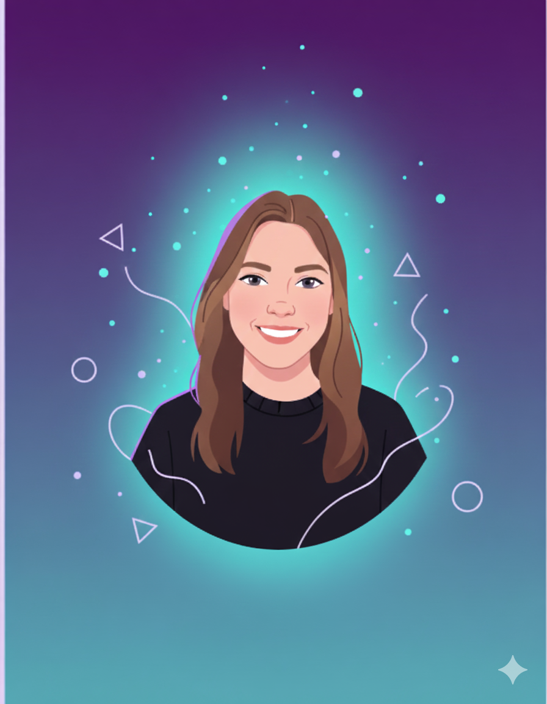

Soy desarrolladora Frontend y diseñadora de interfaces enfocada en crear experiencias digitales modernas, funcionales y visualmente atractivas. Trabajo con tecnologías como HTML, CSS, Java, Android Studio, un poco de React y Angular, además de desarrollo web en WordPress.
Descargar mi CVJava
PHP
MySQL
HTML
CSS
JavaScript
Angular
React
Figma
PHP · MySQL · JavaScript · HTML/CSS
Estado actual: Implementando la lógica de backend en mi formación de DAW. Desarrollo de plataforma integral para gestión de inventario de motocicletas con panel CRUD profesional.
WordPress · CSS personalizado · IONOS
Sitio web desarrollado para una marca deportiva, enfocado en experiencia visual moderna y diseño responsive.
🌐 Ver sitioAndroid Studio · SQL Server · API .NET Core
Aplicación móvil desarrollada para la gestión de facturación con conexión a base de datos SQL y API personalizada en .NET Core.
React Native · Expo · Mobile Development
Aplicación móvil híbrida desarrollada con React Native para la gestión inteligente y personalizada de listas de compra domésticas.